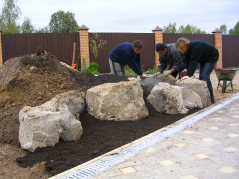

|
Створення альпійської гірки - справа досить трудомістка та клопітка.
Перед тим, як приступити безпосередньодо до створення альпінарію, необхідно провести ряд підготовчих робіт, ретельно роспланувати ділянку, скласти детальний план розміщення всіх декоративних елементів, підготувати ділянку і тільки після цього почати висаджування рослин. Ознайомитись та реалізувати все це допоможуть Вам наші садівники.
Отож, почнемо!
Вибір місця для альпінарію (альпійської гірки).
Альпінарій потрібно розмістити так, щоб він органічно вписався в навколишній ландшафт. Не обов'язково шукати великий простір - адже крихітні альпійські рослини - не дерева, і їх на невелиій ділянці помістяться десятки. Для альпінарію обирають, як правило, сонячне місце з достатньо аерованим грунтом. По можливості, влаштувати альпінарій (альпійську гірку) необхідно так, щоб він був обернений на схід чи південний схід. В таких експазиціях можна створювати умови, найбільш властві умовам проживання більшості гірських рослин. Особливо вдало гірка буде виглядати на ділянці з характерним рельєфом на фоні яскраво-смарагдового газону.
Матеріал для альпінарію (альпійської гірки).
Обрав місце для альпінарію, потрібно підготувати відповідні матеріали для його устаткування - каміння, гравій, щебінь, пісок, торф, грунт.
Зазвичай використовують місцеві породи каміння, вибираючи оригінальні - покриті мохом, щоб сад виглядав природнім.
Однієї породи достатньо, щоб не перетворювати альпінарій в геологічну виставку.
Щебінь - потрібний для дренажу, обкладання шийок деяких рослин, щоб оберегти їх від надмірної кількості вологи, а також для створення декоративної підсипки.
У будівництві альпінарію (альпійської гірки) використовують пісок, бажано річковий. Його додають в щільний грунт, щоб зробити його більш рихлим.
Щодо вибору грунту то перейматись не варто, так як більшість рослин по своїй природі дуже скромні, за виключенням певних видів, наприклад, рододендрон потребує великої кількості торфу і грубого шару соснової підсипки, а "венерині черевички" - компосту з букового листя.
Будівництво альпінарію (альпійської гірки).
Починається воно з планування і розбивки ділянки. Після цього очищають, знімають дернину і прополюють її так, щоб видалити всі бур'яни. Закінчивши чистку, наносять шар із будівельних відходів (це принаймі зекономить Вам кошти), шлаку або гравію.
Виходить водопропускний шар, котрий не дозволить воді затримуватись - адже більшість гірських рослин не переносять постійної присутності вологи. Якщо земля в саду глиняна, щільна і на ній вода застоюється, то дренажний шар повинен бути товстішим, мінімум пів метра. Цей шар створюють сумішшю грунту без добрива, краще всього компостом із дернини з додаванням піску, торфу і перегною. Перезбагачення грунту призводить до прямо протилежного результату: рослини виростають занадто високими, створюють рихлі зарослі або зовсім не з'являються.
Приступаючи до влаштування великого альпінарію (альпійської гірки), необхідно завчасно помітити доріжки, сходи, переходи. Рельєф повинен бути змодельований за зразком природного ландшафту, а це означає, що потрібно провести розмітку "долин", "плато", "вершин" і "обривів", створити різні по освітленості зони: зону повного освітлення, зону зі схилом у бік від сонця, тіньову. Такі умови диктують вимоги рослин, їх екологія.
Закінчивши планування, приступають до розміщення валунів, причому так, щоб над поверхнею залишалась їх менша частина - це майбутні "гірські скелі". Починати слід з підніжжя і перехордити до вершини схилу.

В одному місці можна влаштувати ущелину, а в іншому - "звисаючу стінку", терасу, рівнину. Слід запобігати геометричної стрункості, вона протирічить характеру гірського пейзажу. Альпінарій повинен бути естетичним навіть без рослин, вони тільки підсилюють загальний вигляд. Пейзаж можна вирізнити "болотцем", вільно лежачим невеликим валуном, одиноким кущем.
Тепер, коли в загальних межах альпінарій готовий, треба дати час грунту, щоб він осів. Це доцільно ще й тому, що в землі залишилась певна кількість насіння бур'яну і знадобиться додаткове микання, щоб їх позбутися.
В результаті осідання, що виникли та порожнини необхідно засипати, після чого можна приступати до висадки рослин.
Догляд за альпінарієм (альпійською гіркою).
Альпінарій (альпійська гірка) тішить око тільки тоді, коли у догляді дотримуватись зразкового порядку. Не достатньо просто побудувати альпінарій. Його потрібно прополювати, чистити, поливати, пересаджувати рослини, створюючи їм сприятливі умови. Деякі види розростаються досить швидко і їх необхідно формувати, іншим потрібен особливий догляд тому, що вони важко звикають до нових умов проживання. На все це витрачається маса часу.
Найбільше турбот випадає садівнику весною і ввосени. Весною альпінарій перш за все треба вичистити, зібрати опавші та налетівші лися, зняти прикриття з рослин, усунути наслідки діяльності кротів, мишей та інших шкідників. Каміння, що розхитались зимовою непогодою, потрібно знову закріпити, утрамбувати землю і насипати свіжу. З першими теплими днями почнуть з'являтися бур'яни. Влітку замість вимикання бур'яну садівника чекає полив рослин, якщо, звісно, немає автоматичного, що взагалі полегшує завдання. Літні каверзи засухою не обмежуються. Нашкодити гірці може дощ, оскільки каміння воду не вбирає, а лише спрямовує її по мініатюрних земляних канавках вниз. В результаті на верхніх частинах грунт вимивається, рослини залишаються без живильного середовища. Виправити ситуацію можна за допомогою мульчуючих матеріалів - вони затримають вологу і не дають стрімким потокам відвести за собою грунт.
Восени приступать до висадки нових цибулинних рослин і готують альпінарій до зимівлі: зрізують стебла, котрі відцвіли, викопують цибулини і бульби не здатних до зимівлі видів, коріння рододендронів укріплюють та рясно заливають, стягують хвойні деревця, щоб їхні гілки не поламалися під від ваги снігу. |